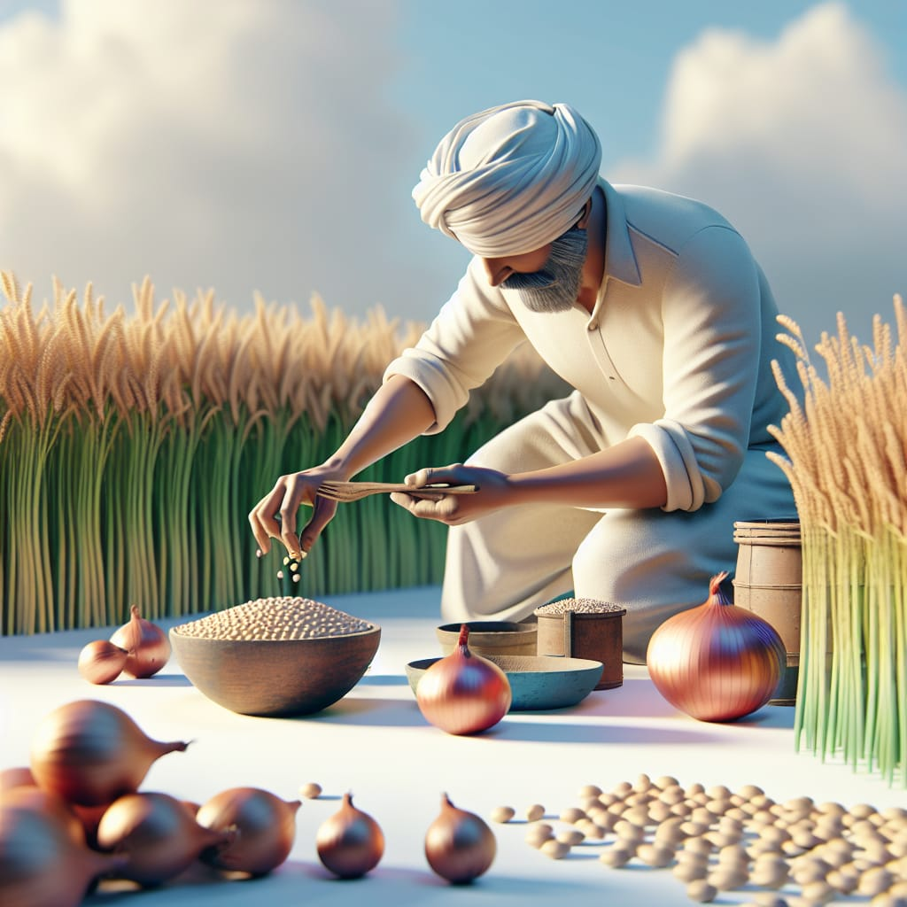

Onion Seed Information

Types of Onion Seeds
- Short-Day Onions: Thrive in mild winters with short daylight. Example: Texas Early Grano.
- Intermediate-Day Onions: Require 12–14 hours of daylight. Examples: Candy, Super Star.
- Long-Day Onions: Need 14–16 hours of daylight. Example: Walla Walla.
Growing Conditions
- Soil: Well-drained, fertile soil with a pH between 6.0 and 7.0.
- Temperature: Best germination occurs at 20–25°C (68–77°F).
- Sunlight: Full sunlight is essential.
- Watering: Regular watering is important, but avoid waterlogging.
How to Grow Onions
- Seed Sowing: Sow seeds 1/4 inch deep in soil or trays indoors 8–10 weeks before transplanting.
- Spacing: Maintain 4–6 inches between plants for proper bulb growth.
- Harvesting: Onions are ready when the tops fall over and turn brown.